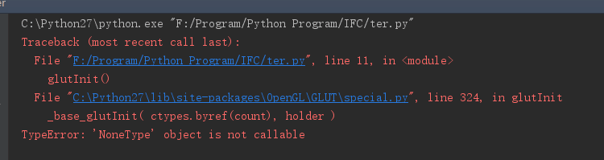

1.目前PyOpenGL是用python2写的，如果你使用的是python3需要自己修改PyOpenGL,我这里使用的是python2.7
2.下载PyOpenGLhttps://pypi.org/project/PyOpenGL/3.1.0/#modal-close，下载对应系统版本的就可以
3.运行exe或者setup
4.测试 茶壶
from OpenGL.GL import *
from OpenGL.GLU import *
from OpenGL.GLUT import *
def Draw():
glClear(GL_COLOR_BUFFER_BIT)
glRotatef(0.5, 0, 1, 0)
glutWireTeapot(0.5)
glFlush()
glutInit()
glutInitDisplayMode(GLUT_SINGLE | GLUT_RGBA)
glutInitWindowSize(400, 400)
glutCreateWindow("test")
glutDisplayFunc(Draw)
glutIdleFunc(Draw)
glutMainLoop()
if __name__ == '__main__':
Draw()5.运行报错（这是因为没有权限导致的）

6.将2中下载的PyOpenGL-3.1.0.zip解压，将\OpenGL\DLLS文件夹复制到Python27\Lib\site-packages\OpenGL下
7.重新运行测试文件，通过
8.如果你使用python3的环境去运行，会报错,请下载对应的OpenGL版本
pip3 install PyOpenGL==3.1.0 numpy==1.14.5
如果你使用Linux系统，可以不用下载源码，使用以下命令：
$ sudo apt-get update
$ sudo apt-get install freeglut3
$ sudo apt-get install freeglut3-dev